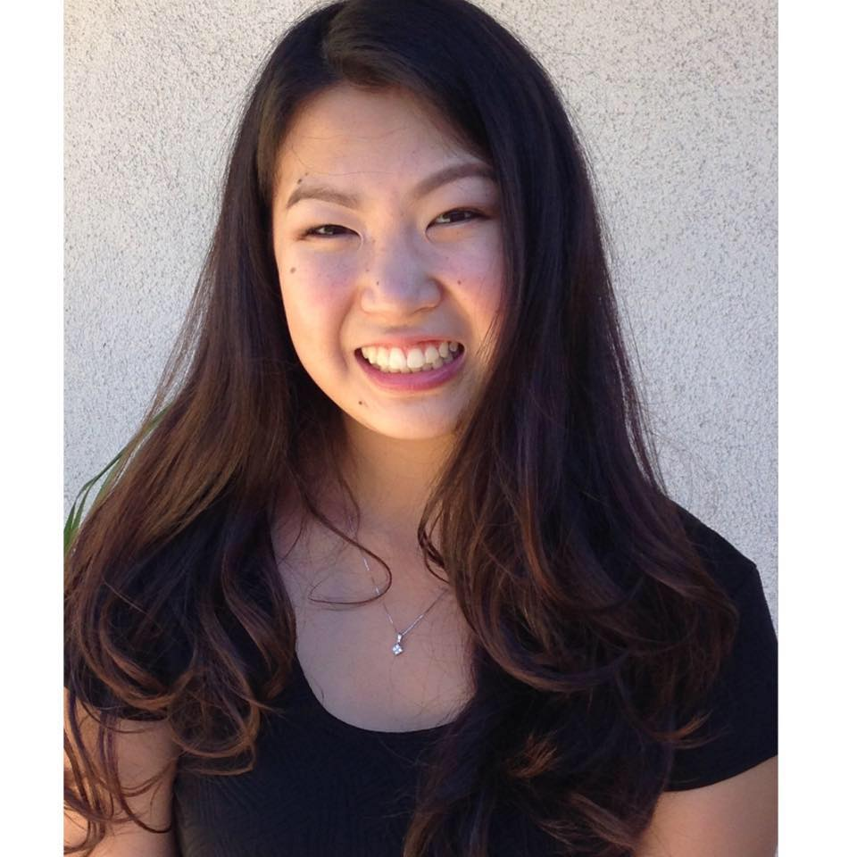

Hi! My name is Sydney Ikegami. I am currently a second year at UC Berkeley and am pursuing a degree in both political eonomy and sociology. I spend a lot of my time mentoring kids through OASES, a club on campus. I am currently on the board of this club and I hope that people will find the same hope and motivation to do well through these kids. I am currently looking for careers in marketing, specifically advertising, or finance. When I'm not in class, you can find me hanging out with friends, eating good food, and traveling around the world.
Let's keep in contact!
sikegami@berkeley.edu